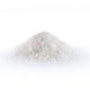

Pâtes aux tomates fraiches
Temps de préparation : 10 min
Temps de cuisson : 10 min
Niveau : Facile
Ingrédients
Pour 2 personne :
- 600 g de tomates
- 400 g de pâtes
- 1 cuillère a soupe d'Ail Première Saveur

- huile d'olive

- Sel, Poivre
Instruction
- Lavez et coupez les tomates en morceaux et faites-les revenir dans un peu d’huile, dans une sauteuse, à feu vif, pendant quelques minutes.
- Quand les tomates sont fondues, ajoutez le basilic, l’origan et l’ail. Salez, poivrez. Laissez mijoter encore 5 minutes.
- Faites cuire les pâtes, égouttez-les et servez-les avec la sauce tomate.
- Arrosez d’un filet d’huile d’olive et pour les plus gourmands, ajoutez du parmesan!
Retour